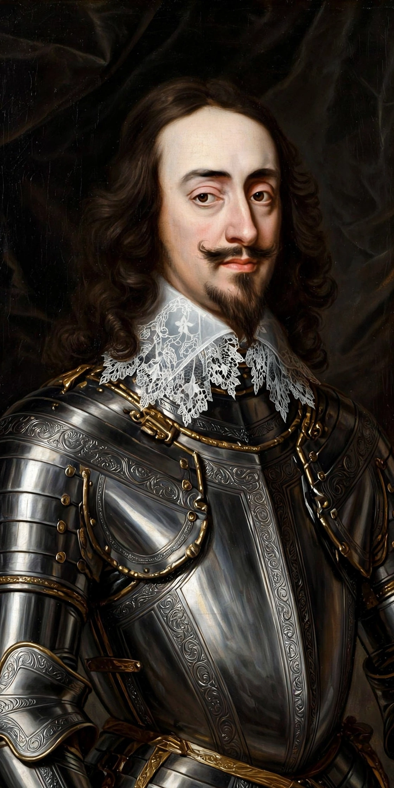

From Wikipedia, the free encyclopedia
| Charles I | |
 Charles I by Anthony van Dyck, c. 1635–36 | |
| Reign | 27 March 1625 – 30 January 1649 |
| Born | 19 November 1600, Dunfermline Palace, Scotland |
| Died | 30 January 1649 (aged 48), Whitehall, London |
| Spouse | Henrietta Maria of France |
| Issue | Charles II; Mary, Princess Royal; James II; Elizabeth; Henry, Duke of Gloucester; Henrietta |
| House | Stuart |
| Father | James VI and I |
| Mother | Anne of Denmark |
Charles I (19 November 1600 – 30 January 1649) was King of England, Scotland, and Ireland from 27 March 1625 until his execution in 1649. He was born into the House of Stuart as the second son of King James VI of Scotland, but after his father inherited the English throne in 1603, he moved to England, where he spent much of the rest of his life. He became heir apparent to the kingdoms of England, Scotland, and Ireland in 1612 upon the death of his elder brother, Henry Frederick, Prince of Wales.
Charles believed in the divine right of kings and governed according to his own conscience, clashing repeatedly with the Parliament of England, which sought to curb his powers. Many of his subjects opposed his policies, in particular the levying of taxes without parliamentary consent, and perceived his actions as those of a tyrannical absolute monarch. His religious policies, coupled with his marriage to a Roman Catholic, generated antipathy in Reformed groups such as the English Puritans and Scottish Covenanters.
Charles succeeded his father in 1625 and married Henrietta Maria of France. His first parliaments quarrelled with him over foreign policy failures (including the Cádiz expedition), the influence of his favourite the Duke of Buckingham, and the raising of revenue by a forced loan. The Petition of Right (1628) asserted limits on non-parliamentary taxation and arbitrary imprisonment. After the dissolution of 1629, Charles ruled without Parliament for eleven years — the "Personal Rule" — financing government through expedients such as ship money, whose legality was narrowly upheld in the case of John Hampden (1637) amid widespread resentment.
Charles and Archbishop William Laud promoted ceremonial, "Arminian" reforms in the Church of England that many Puritans saw as a drift toward Catholicism. Attempting to impose a new prayer book on Scotland provoked the National Covenant (1638) and the Bishops' Wars (1639–40). Bankrupt, Charles summoned first the Short and then the Long Parliament (November 1640), which impeached his ministers Strafford and Laud, abolished the prerogative courts and declared ship money illegal. Charles's attempt to arrest five members of Parliament in January 1642 destroyed remaining trust.
Charles raised his standard at Nottingham in August 1642, beginning the English Civil War. Royalist ("Cavalier") forces initially held much of the north and west, but Parliament's New Model Army destroyed the main royalist army at Naseby (1645) and Charles surrendered to the Scots in 1646. His secret engagement with Scottish allies triggered a second civil war in 1648, which ended with his defeat. The army purged Parliament (Pride's Purge) and the remaining "Rump" put Charles on trial for high treason before a specially created High Court of Justice. Refusing to recognise the court, he was convicted and beheaded on a scaffold outside the Banqueting House in Whitehall on 30 January 1649 — the first, and only, execution of an English king by his own subjects' tribunal.
The monarchy was abolished and England became a republic, the Commonwealth, under Oliver Cromwell. Charles was canonised by the Church of England in 1660, after his son Charles II was restored, and is commemorated as Saint Charles the Martyr. The Eikon Basilike, published as his meditations, shaped his image as a pious, suffering king. Historians debate the balance between his intransigence and principled conviction, and the structural tensions between crown and Parliament that his reign exposed.